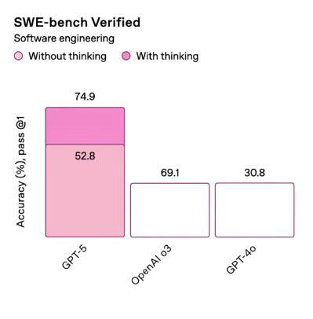
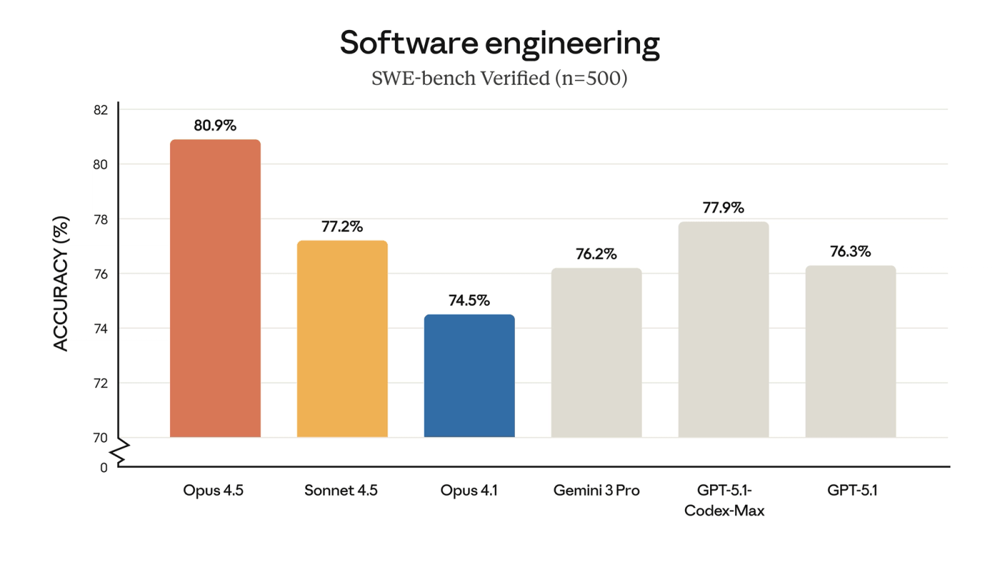
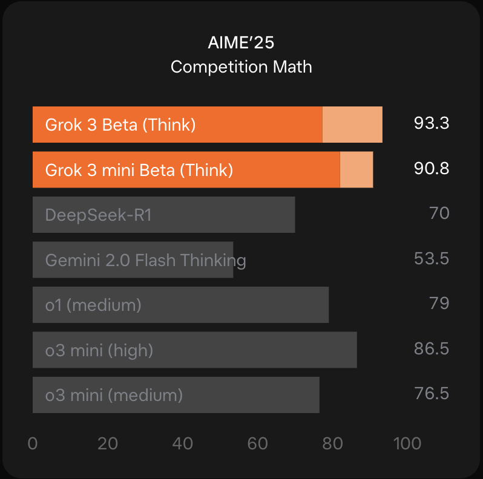
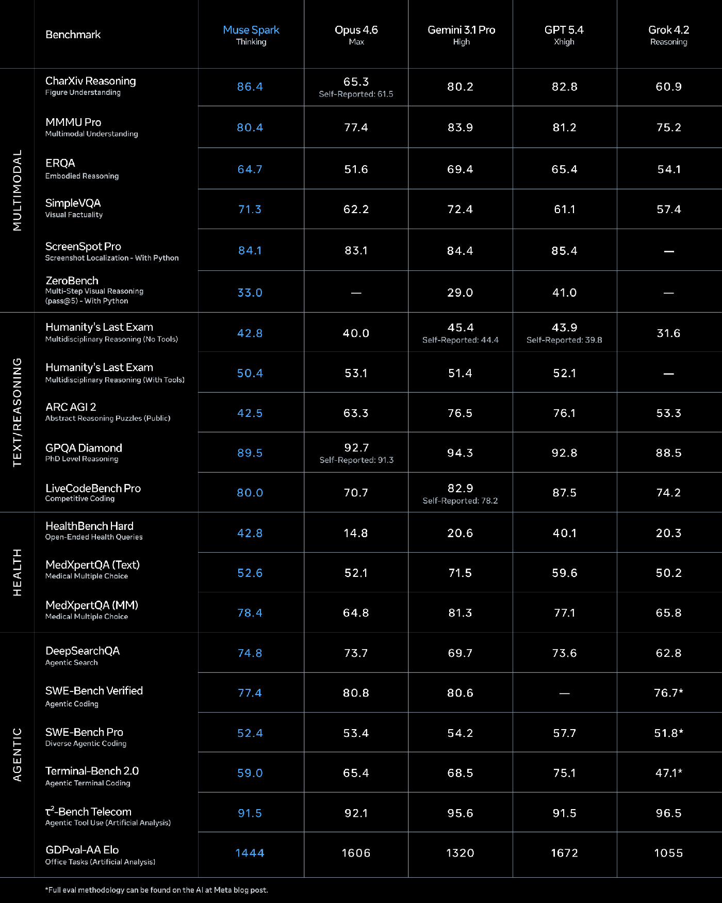
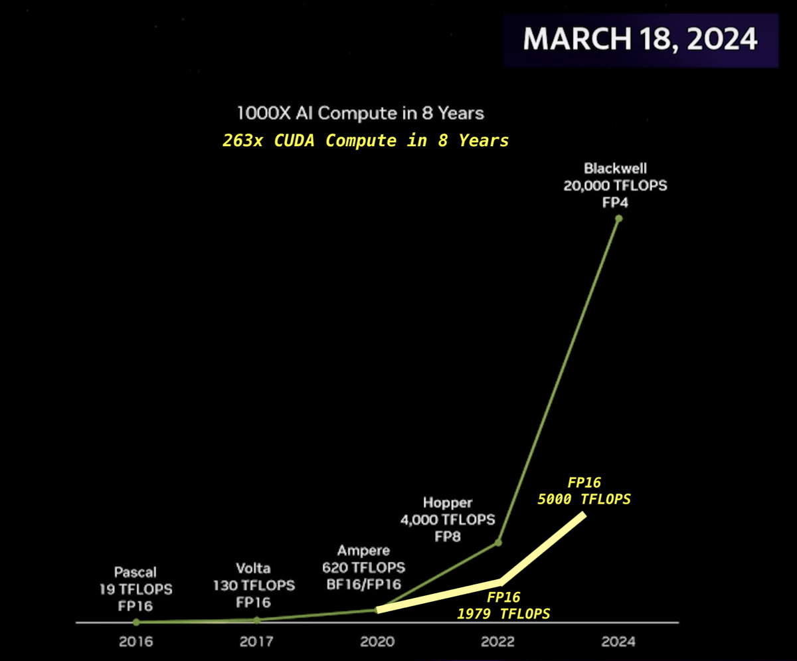
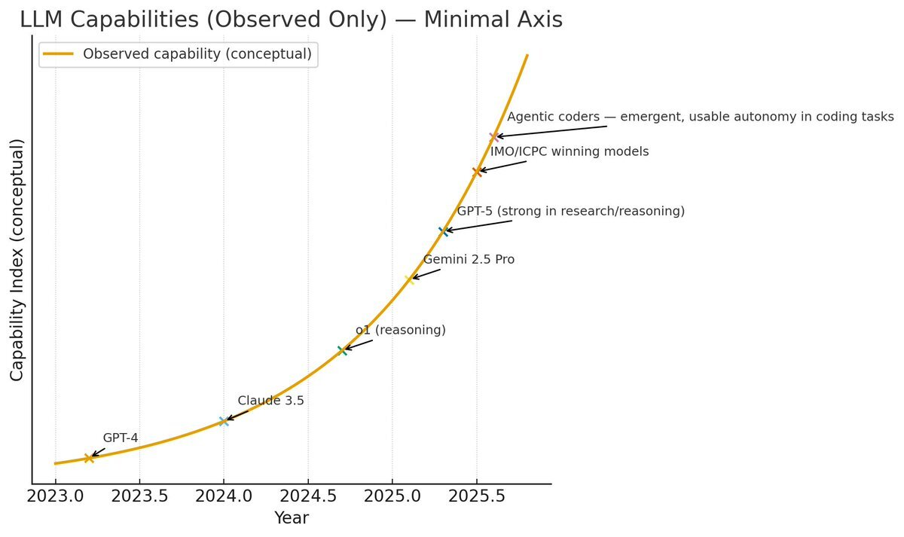
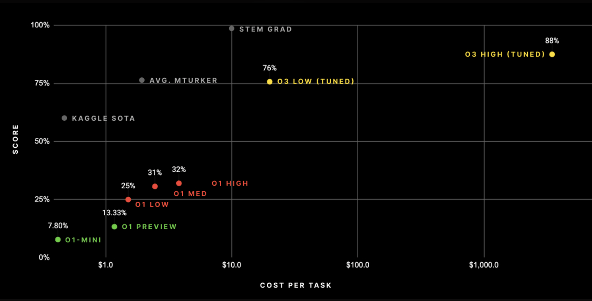

Seven charts from the AI world, exactly as they were published.
“Chart crime” started as finance slang. Reuters journalist Eric Burroughs began using it on Twitter in 2015, and it stuck because traders needed a name for a graph that isn’t technically lying but is obviously up to something.
These days the best specimens come from AI launches. A launch chart is half research result, half ad, and usually finished the night before the livestream. You can guess which half wins.
OpenAI - August 2025

52.8 is drawn taller than 69.1, and 69.1 is drawn exactly as tall as 30.8.
Sam Altman called it a “mega chart screwup” and said the team had been working late and was very tired. Hacker News had already named the technique: vibegraphing.
Anthropic - November 2025

The y-axis jumps from 0 straight to 70 (that’s the little zigzag at the bottom), so the whole chart spans 12 points. That’s how Opus 4.5’s bar ends up 2.4 times taller than Opus 4.1’s, when the real scores are 80.9% and 74.5%, a gap of under 9%.
The zigzag is at least an honest confession. One reviewer still called the chart a bit misleading.
xAI - February 2025

Those pale tips on the orange bars are cons@64: the model gets 64 tries at each problem and submits its most common answer. None of the grey bars got that treatment.
Put your thumb over the pale tips and both Grok models fall behind o3 mini (high). OpenAI’s cons@64 score for o3 mini, which beats Grok 3, didn’t make the chart. When an OpenAI employee complained, xAI’s co-founder said OpenAI does the same thing. He may be right, but that’s not really a defense.
Meta - April 2026

One column gets the blue treatment, and it’s Meta’s. Go row by row and Muse Spark has the best score in 3 of the 20.
Color tells your eye where the winner is before you’ve read a single number. Here it points at the model that mostly isn’t.
Nvidia - March 2024

The chips are real, but read the small print under each point: FP16, FP16, BF16/FP16, FP8, FP4. Those are number formats, and each step down to a smaller one roughly doubles how many operations a chip can do. So part of that curve is just smaller numbers.
The yellow line shows the same chips at one precision: 263x instead of 1000x. Still wild, just not 1000x wild.
Twitter - October 2025

This one’s a popular post, not a company. The y-axis measures “Capability Index (conceptual)” and has no numbers on it, and the models sit neatly on a smooth curve.
It’s the purest AI progress chart there is: impossible to prove wrong, because it doesn’t claim anything.
ARC Prize - December 2024

To ARC Prize’s credit, cost is on the chart at all. But each gridline on the x-axis is ten times the one before it.
In their own table, going from 75.7% to 87.5% took the cost per task from $26 to $4,560. That’s 175 times the money for about 12 more points, and on this chart it looks like a short hop to the right.
Read the small print
None of these tricks were hidden. The axis break, the pale tips, the FP4: it’s all printed right on the chart. They just bet you wouldn’t look.
The funny part is that some of them didn’t need to. GPT-5 really did beat o3, and Opus 4.5 really did top SWE-bench. The honest charts would have been impressive anyway.